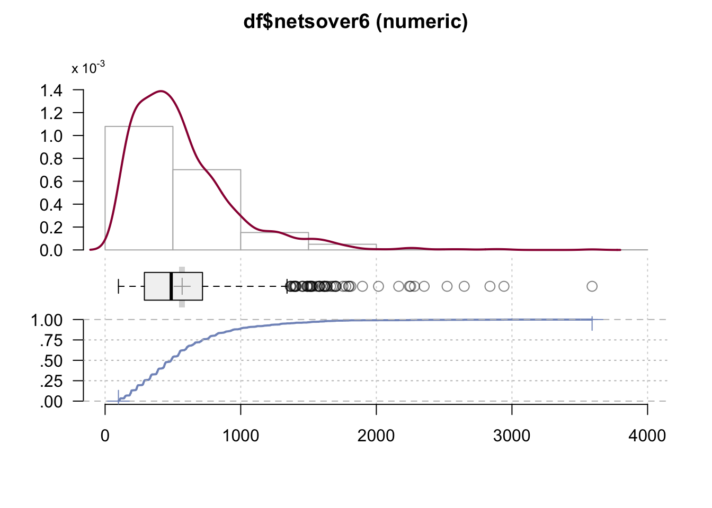
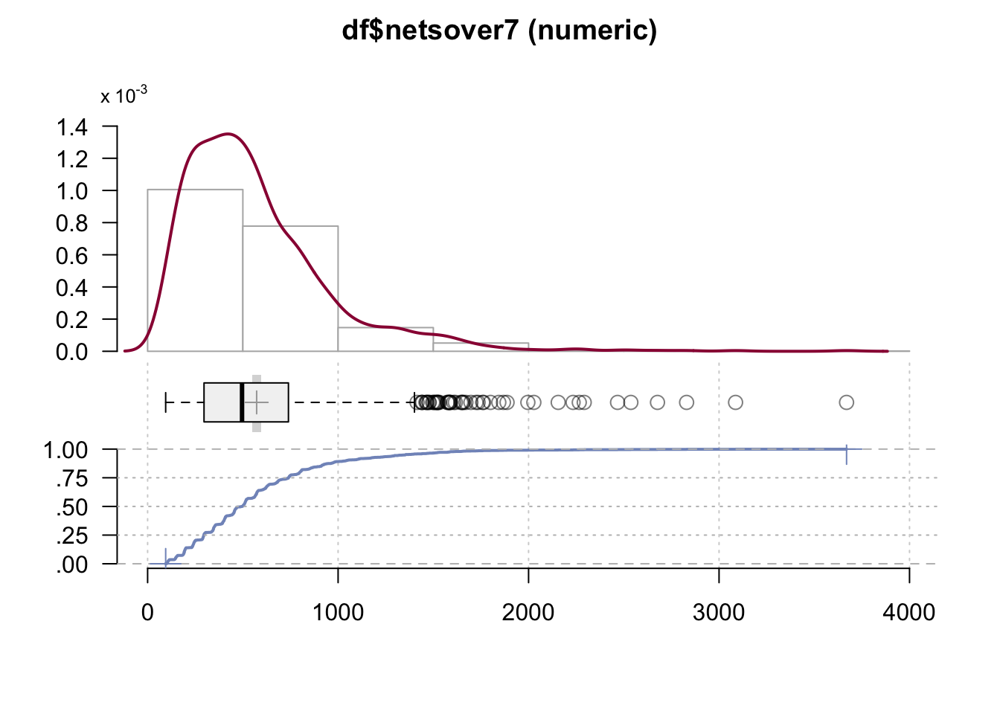
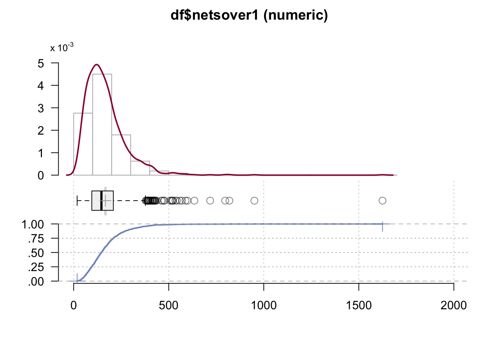
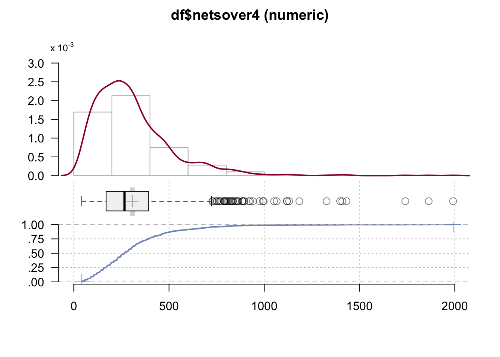
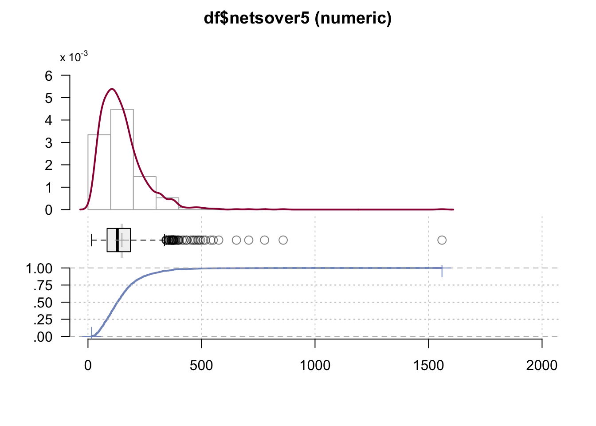

Last compiled on March, 2025
This is the code with which we run our inferential analyses.
Start out with a custom function to load a set of required packages.
# packages and read data
rm(list = ls())
# (c) Jochem Tolsma
fpackage.check <- function(packages) {
lapply(packages, FUN = function(x) {
if (!require(x, character.only = TRUE)) {
install.packages(x, dependencies = TRUE)
library(x, character.only = TRUE)
}
})
}
packages = c("haven", "coda", "matrixStats", "parallel", "MASS", "doParallel", "dplyr", "cowplot", "tidyverse",
"naniar", "dotwhisker", "gt", "reshape2", "VGAM", "expss", "Hmisc", "MASS", "sjPlot")
fpackage.check(packages)#> [[1]]
#> NULL
#>
#> [[2]]
#> NULL
#>
#> [[3]]
#> NULL
#>
#> [[4]]
#> NULL
#>
#> [[5]]
#> NULL
#>
#> [[6]]
#> NULL
#>
#> [[7]]
#> NULL
#>
#> [[8]]
#> NULL
#>
#> [[9]]
#> NULL
#>
#> [[10]]
#> NULL
#>
#> [[11]]
#> NULL
#>
#> [[12]]
#> NULL
#>
#> [[13]]
#> NULL
#>
#> [[14]]
#> NULL
#>
#> [[15]]
#> NULL
#>
#> [[16]]
#> NULL
#>
#> [[17]]
#> NULL
#>
#> [[18]]
#> NULLrm(packages)
load("data/dutch_netsize_analyses_revision_2.rda")We run a series of regression models of logged acquantanceship network size (as it is right-skewed) on our independent and control variables. We thus run 172 different regression models (all scenarios).
# ######################## # MODELS ####################### # # age in categories, eval = false in
# 'independent_variables.rmd' fix later df$agecat[df$agecat == '18-30'] <- 1 df$agecat[df$agecat ==
# '31-45'] <- 2 df$agecat[df$agecat == '46-65'] <- 3 df$agecat[df$agecat == '>65'] <- 4
# table(df$agecat) class(df$agecat) # some final data handling to assign the correct reference
# categories df$opl <-relevel(df$opl, ref = 1) df$migr3 <-relevel(as.factor(df$migr3), ref = 1)
# df$income <-relevel(as.factor(df$income), ref = 2) df$agecat <-relevel(as.factor(df$agecat), ref
# = 4) # 172 regressions with different netsizes. We then look at distributions of coefficients
# across those. # note the log10 for network size and how we don't take into account extreme
# network size. modellog <- list() for (i in 14:185) { df[,c(i)] <- round(df[, c(i)], 0)
# modellog[[i]] <- lm(log10(df[!df[[i]]>5000, c(i)]) ~ as.factor(work) + hhsize + as.factor(migr3)
# + as.factor(agecat) + as.factor(income) + worthhouse + as.factor(woman) + as.factor(opl), data =
# df[!df[[i]]>5000,]) } modellog[sapply(modellog, is.null)] <- NULL summary(modellog[[1]])We then render all those models into one figure where we can show statistical signifance and that results do not vary over all those scenarios. This matches Figure 3 in the paper.
# #-------------------------------------------------------------------------------- # Viz of
# results # main effects four_brackets <- list( c('Dutch maj=ref', 'West backgr', 'non-West
# backgr'), c('>65=ref', '18-30', '46-65'), c('>modal inc=ref', '<=modal income', 'Unkn income'),
# c('Educ tert high=ref', 'Educ prim/sec', 'Educ tert low')) logmodel <- {dwplot(modellog, dot_args
# = list(color = 'black', size = 0.75, shape = 1), # color for the dot whisker_args = list(size =
# 0.25, color = 'darkgrey', alpha = 0.5), # color for the whisker vline =
# ggplot2::geom_vline(xintercept = 0, # put vline _behind_ coefs; see
# https://github.com/fsolt/dotwhisker/issues/84 colour = 'grey60', linetype = 2, linewidth = 1))
# %>% # make model variable relabel_predictors(c( 'as.factor(work)1' = 'Working', 'hhsize' =
# 'Household size', 'as.factor(migr3)2' = 'West backgr', 'as.factor(migr3)3' = 'non-West backgr',
# 'as.factor(agecat)1' = '18-30', 'as.factor(agecat)2' = '31-45', 'as.factor(agecat)3' = '46-65',
# 'as.factor(income)1' = '<=modal income', 'as.factor(income)3' = 'Unkn income', 'worthhouse' =
# 'House value', 'as.factor(woman)1' = 'Women', 'as.factor(opl)1' = 'Educ prim/sec',
# 'as.factor(opl)2' = 'Educ tert low' )) + theme(legend.position = 'none', axis.text =
# element_text(color = 'grey')) + theme_minimal() + xlab('B on Log(network size count)')} %>%
# add_brackets(four_brackets, fontSize = .6) ggsave('output/models.pdf', plot = logmodel, device =
# 'pdf', scale = 1, width = 6, height = 5, units = c('in'), dpi = 'retina') # Figure 3 in the paper
# logmodelWe also average all 172 network size scenarios within respondents and run one single regression model so as to generate a table with coefficients. This matches Table 3 in the paper.
# df$netsize <- round(rowSums(df[,c(14:185)]) / length(14:185), 0) modell <- lm(log10(netsize) ~
# as.factor(work) + hhsize + as.factor(migr3) + as.factor(agecat) + as.factor(income) + worthhouse
# + as.factor(woman) + as.factor(opl), data = df[!df[['netsize']]>5000,]) modellin <- lm(netsize ~
# as.factor(work) + hhsize + as.factor(migr3) + as.factor(agecat) + as.factor(income) + worthhouse
# + as.factor(woman) + as.factor(opl), data = df[!df[['netsize']]>5000,]) fpackage.check('sjPlot')
# #table 3 in the paper tab_model(modell, modellin, show.se = TRUE)# # robustness, migration two cats, and income no missings lead to similar results summary(x
# <-lm(log10(netsize) ~ as.factor(work) + hhsize + as.factor(migr) + as.factor(agecat) +
# as.factor(income) + worthhouse + as.factor(woman) + as.factor(opl), data =
# df[!df[['netsize']]>5000,])) summary(x <-lm(log10(netsize) ~ as.factor(work) + hhsize +
# as.factor(migr3) + as.factor(agecat) + as.factor(income) + worthhouse + as.factor(woman) +
# as.factor(opl), data = df[!df[['netsize']]>5000 & df$income != 3,]))From here onwards, we show our new results based on the revisions of this paper.
# # age in categories, eval = false in "independent_variables.rmd" fix later
df$agecat[df$agecat == "18-30"] <- 1
df$agecat[df$agecat == "31-45"] <- 2
df$agecat[df$agecat == "46-65"] <- 3
df$agecat[df$agecat == ">65"] <- 4
table(df$agecat)#>
#> 4 1 2 3
#> 299 208 230 512class(df$agecat)#> [1] "factor"# some final data handling to assign the correct reference categories
#df$opl2 <-relevel(as.factor(df$opl2), ref = 0)
df$agecat<- as.character(df$agecat)
df$income<- as.character(df$income)
df$income <-relevel(as.factor(df$income), ref = 2)
df$agecat <-relevel(as.factor(df$agecat), ref = 4)
table(df$opl2)#>
#> 0 1
#> 783 466summary(df$netsover1)#> Min. 1st Qu. Median Mean 3rd Qu. Max.
#> 18.23 95.43 146.04 166.94 208.88 1624.76summary(df$netsover2)#> Min. 1st Qu. Median Mean 3rd Qu. Max.
#> 18.25 93.89 144.78 165.37 207.39 1604.70summary(df$netsover3)#> Min. 1st Qu. Median Mean 3rd Qu. Max.
#> 248.9 438.4 997.9 1599.9 2216.2 27111.8summary(df$netsover4)#> Min. 1st Qu. Median Mean 3rd Qu. Max.
#> 42.17 169.78 266.08 308.85 392.55 1991.33summary(df$netsover5)#> Min. 1st Qu. Median Mean 3rd Qu. Max.
#> 15.80 84.18 129.69 149.67 187.15 1559.14summary(df$netsover6)#> Min. 1st Qu. Median Mean 3rd Qu. Max.
#> 98.3 289.6 487.6 568.0 718.3 3590.9DescTools::Desc(df$netsover6)#> ──────────────────────────────────────────────────────────────────────────────────────────────────
#> df$netsover6 (numeric)
#>
#> length n NAs unique 0s mean meanCI'
#> 1'249 1'249 0 = n 0 568.04962 546.40874
#> 100.0% 0.0% 0.0% 589.69050
#>
#> .05 .10 .25 median .75 .90 .95
#> 145.10962 189.16292 289.61668 487.56399 718.26326 1'036.32633 1'317.85350
#>
#> range sd vcoef mad IQR skew kurt
#> 3'492.57384 389.84025 0.68628 304.19046 428.64658 2.03036 7.15149
#>
#> lowest : 98.29521, 98.78263, 98.94134, 100.64501, 102.14226
#> highest: 2'521.80046, 2'648.02827, 2'837.85118, 2'941.00644, 3'590.86905
#>
#> ' 95%-CI (classic)
DescTools::Desc(df$netsover7)#> ──────────────────────────────────────────────────────────────────────────────────────────────────
#> df$netsover7 (numeric)
#>
#> length n NAs unique 0s mean meanCI'
#> 1'249 1'249 0 = n 0 572.3718 550.4704
#> 100.0% 0.0% 0.0% 594.2732
#>
#> .05 .10 .25 median .75 .90 .95
#> 147.1833 192.0320 296.1159 495.6943 739.3279 1'043.0004 1'352.4317
#>
#> range sd vcoef mad IQR skew kurt
#> 3'574.6568 394.5333 0.6893 301.8440 443.2121 2.0620 7.4800
#>
#> lowest : 94.8051, 100.1381, 101.2659, 101.3045, 101.516
#> highest: 2'537.0009, 2'676.8110, 2'829.6731, 3'086.7295, 3'669.4619
#>
#> ' 95%-CI (classic)
modell2 <- lm(log(netsover6) ~
as.factor(work) + #h1
hhsize + #H2
as.factor(agecat) + #h3
as.factor(income) + #h4
worthhouse + #H4
as.factor(woman) + #h5
as.factor(opl2), #h6
data = df[!df[["netsover6"]]>2500,])
summary(modell2)#>
#> Call:
#> lm(formula = log(netsover6) ~ as.factor(work) + hhsize + as.factor(agecat) +
#> as.factor(income) + worthhouse + as.factor(woman) + as.factor(opl2),
#> data = df[!df[["netsover6"]] > 2500, ])
#>
#> Residuals:
#> Min 1Q Median 3Q Max
#> -1.74525 -0.38338 0.02472 0.39268 1.63070
#>
#> Coefficients:
#> Estimate Std. Error t value Pr(>|t|)
#> (Intercept) 5.61480 0.08040 69.834 < 2e-16 ***
#> as.factor(work)1 0.15854 0.04354 3.642 0.000282 ***
#> hhsize 0.08166 0.01647 4.957 8.17e-07 ***
#> as.factor(agecat)1 0.31600 0.06317 5.002 6.48e-07 ***
#> as.factor(agecat)2 0.16268 0.06493 2.505 0.012362 *
#> as.factor(agecat)3 0.10123 0.05193 1.949 0.051479 .
#> as.factor(income)1 -0.07853 0.04269 -1.839 0.066098 .
#> as.factor(income)3 -0.07534 0.05669 -1.329 0.184063
#> worthhouse 0.05362 0.02017 2.659 0.007941 **
#> as.factor(woman)1 0.01680 0.03524 0.477 0.633614
#> as.factor(opl2)1 0.07790 0.03955 1.970 0.049100 *
#> ---
#> Signif. codes: 0 '***' 0.001 '**' 0.01 '*' 0.05 '.' 0.1 ' ' 1
#>
#> Residual standard error: 0.6057 on 1233 degrees of freedom
#> Multiple R-squared: 0.1232, Adjusted R-squared: 0.1161
#> F-statistic: 17.32 on 10 and 1233 DF, p-value: < 2.2e-16modellnb2 <- glm.nb(netsover6 ~
as.factor(work) +
hhsize +
as.factor(agecat) +
as.factor(income) +
worthhouse +
as.factor(woman) +
as.factor(opl2),
data = df[!df[["netsover6"]]>2500,],
init.theta = 1.032713156, link = log)
summary(modellnb2)#>
#> Call:
#> glm.nb(formula = netsover6 ~ as.factor(work) + hhsize + as.factor(agecat) +
#> as.factor(income) + worthhouse + as.factor(woman) + as.factor(opl2),
#> data = df[!df[["netsover6"]] > 2500, ], init.theta = 3.02530196,
#> link = log)
#>
#> Coefficients:
#> Estimate Std. Error z value Pr(>|z|)
#> (Intercept) 5.849823 0.076534 76.435 < 2e-16 ***
#> as.factor(work)1 0.127663 0.041442 3.080 0.00207 **
#> hhsize 0.070763 0.015676 4.514 6.36e-06 ***
#> as.factor(agecat)1 0.333836 0.060129 5.552 2.82e-08 ***
#> as.factor(agecat)2 0.175475 0.061822 2.838 0.00453 **
#> as.factor(agecat)3 0.106753 0.049456 2.159 0.03089 *
#> as.factor(income)1 -0.069935 0.040639 -1.721 0.08527 .
#> as.factor(income)3 -0.040986 0.053958 -0.760 0.44749
#> worthhouse 0.044900 0.019192 2.340 0.01931 *
#> as.factor(woman)1 -0.007934 0.033544 -0.237 0.81303
#> as.factor(opl2)1 0.075745 0.037642 2.012 0.04419 *
#> ---
#> Signif. codes: 0 '***' 0.001 '**' 0.01 '*' 0.05 '.' 0.1 ' ' 1
#>
#> (Dispersion parameter for Negative Binomial(3.0253) family taken to be 1)
#>
#> Null deviance: 1473.5 on 1243 degrees of freedom
#> Residual deviance: 1311.0 on 1233 degrees of freedom
#> AIC: 17570
#>
#> Number of Fisher Scoring iterations: 1
#>
#>
#> Theta: 3.025
#> Std. Err.: 0.116
#>
#> 2 x log-likelihood: -17546.061fpackage.check("sjPlot")#> [[1]]
#> NULL# table 3 paper, (negbin is in appendix)
tab_model(modell2, modellnb2, show.se = TRUE)| log(netsover6) | netsover6 | |||||||
|---|---|---|---|---|---|---|---|---|
| Predictors | Estimates | std. Error | CI | p | Incidence Rate Ratios | std. Error | CI | p |
| (Intercept) | 5.61 | 0.08 | 5.46 – 5.77 | <0.001 | 347.17 | 26.57 | 298.37 – 404.03 | <0.001 |
| work [1] | 0.16 | 0.04 | 0.07 – 0.24 | <0.001 | 1.14 | 0.05 | 1.05 – 1.23 | 0.002 |
| hhsize | 0.08 | 0.02 | 0.05 – 0.11 | <0.001 | 1.07 | 0.02 | 1.04 – 1.11 | <0.001 |
| agecat [1] | 0.32 | 0.06 | 0.19 – 0.44 | <0.001 | 1.40 | 0.08 | 1.24 – 1.57 | <0.001 |
| agecat [2] | 0.16 | 0.06 | 0.04 – 0.29 | 0.012 | 1.19 | 0.07 | 1.06 – 1.34 | 0.005 |
| agecat [3] | 0.10 | 0.05 | -0.00 – 0.20 | 0.051 | 1.11 | 0.06 | 1.01 – 1.23 | 0.031 |
| income [1] | -0.08 | 0.04 | -0.16 – 0.01 | 0.066 | 0.93 | 0.04 | 0.86 – 1.01 | 0.085 |
| income [3] | -0.08 | 0.06 | -0.19 – 0.04 | 0.184 | 0.96 | 0.05 | 0.86 – 1.07 | 0.447 |
| worthhouse | 0.05 | 0.02 | 0.01 – 0.09 | 0.008 | 1.05 | 0.02 | 1.01 – 1.09 | 0.019 |
| woman [1] | 0.02 | 0.04 | -0.05 – 0.09 | 0.634 | 0.99 | 0.03 | 0.93 – 1.06 | 0.813 |
| opl2 [1] | 0.08 | 0.04 | 0.00 – 0.16 | 0.049 | 1.08 | 0.04 | 1.00 – 1.16 | 0.044 |
| Observations | 1244 | 1244 | ||||||
| R2 / R2 adjusted | 0.123 / 0.116 | 0.176 | ||||||
#gender
modelwoman <- lm(perwomen ~
as.factor(work) +
hhsize +
as.factor(agecat) +
as.factor(income) +
worthhouse +
as.factor(woman) + #h7
as.factor(opl2),
data = df)
summary(modelwoman)#>
#> Call:
#> lm(formula = perwomen ~ as.factor(work) + hhsize + as.factor(agecat) +
#> as.factor(income) + worthhouse + as.factor(woman) + as.factor(opl2),
#> data = df)
#>
#> Residuals:
#> Min 1Q Median 3Q Max
#> -0.68469 -0.13189 0.04078 0.16113 0.46832
#>
#> Coefficients:
#> Estimate Std. Error t value Pr(>|t|)
#> (Intercept) 0.498266 0.030446 16.365 < 2e-16 ***
#> as.factor(work)1 -0.004459 0.016524 -0.270 0.78732
#> hhsize 0.009540 0.006241 1.529 0.12661
#> as.factor(agecat)1 0.023957 0.023898 1.002 0.31632
#> as.factor(agecat)2 0.010720 0.024553 0.437 0.66248
#> as.factor(agecat)3 0.016652 0.019756 0.843 0.39946
#> as.factor(income)1 0.016213 0.016188 1.002 0.31677
#> as.factor(income)3 0.019798 0.021508 0.921 0.35748
#> worthhouse 0.003215 0.007626 0.422 0.67342
#> as.factor(woman)1 0.090881 0.013365 6.800 1.63e-11 ***
#> as.factor(opl2)1 0.041546 0.015007 2.768 0.00572 **
#> ---
#> Signif. codes: 0 '***' 0.001 '**' 0.01 '*' 0.05 '.' 0.1 ' ' 1
#>
#> Residual standard error: 0.2291 on 1227 degrees of freedom
#> (11 observations deleted due to missingness)
#> Multiple R-squared: 0.05174, Adjusted R-squared: 0.04402
#> F-statistic: 6.695 on 10 and 1227 DF, p-value: 3.394e-10modelman <- lm(permen ~
as.factor(work) +
hhsize +
as.factor(agecat) +
as.factor(income) +
worthhouse +
as.factor(woman) + #h7
as.factor(opl2),
data = df)
summary(modelman)#>
#> Call:
#> lm(formula = permen ~ as.factor(work) + hhsize + as.factor(agecat) +
#> as.factor(income) + worthhouse + as.factor(woman) + as.factor(opl2),
#> data = df)
#>
#> Residuals:
#> Min 1Q Median 3Q Max
#> -0.46832 -0.16113 -0.04078 0.13189 0.68469
#>
#> Coefficients:
#> Estimate Std. Error t value Pr(>|t|)
#> (Intercept) 0.501734 0.030446 16.479 < 2e-16 ***
#> as.factor(work)1 0.004459 0.016524 0.270 0.78732
#> hhsize -0.009540 0.006241 -1.529 0.12661
#> as.factor(agecat)1 -0.023957 0.023898 -1.002 0.31632
#> as.factor(agecat)2 -0.010720 0.024553 -0.437 0.66248
#> as.factor(agecat)3 -0.016652 0.019756 -0.843 0.39946
#> as.factor(income)1 -0.016213 0.016188 -1.002 0.31677
#> as.factor(income)3 -0.019798 0.021508 -0.921 0.35748
#> worthhouse -0.003215 0.007626 -0.422 0.67342
#> as.factor(woman)1 -0.090881 0.013365 -6.800 1.63e-11 ***
#> as.factor(opl2)1 -0.041546 0.015007 -2.768 0.00572 **
#> ---
#> Signif. codes: 0 '***' 0.001 '**' 0.01 '*' 0.05 '.' 0.1 ' ' 1
#>
#> Residual standard error: 0.2291 on 1227 degrees of freedom
#> (11 observations deleted due to missingness)
#> Multiple R-squared: 0.05174, Adjusted R-squared: 0.04402
#> F-statistic: 6.695 on 10 and 1227 DF, p-value: 3.394e-10summary(df$permen)#> Min. 1st Qu. Median Mean 3rd Qu. Max. NA's
#> 0.0000 0.2139 0.3429 0.3892 0.5200 1.0000 11summary(df$perwomen)#> Min. 1st Qu. Median Mean 3rd Qu. Max. NA's
#> 0.0000 0.4800 0.6571 0.6108 0.7861 1.0000 11modelsamegen <- lm(samegender ~
as.factor(work) +
hhsize +
as.factor(agecat) +
as.factor(income) +
worthhouse +
as.factor(woman) + #h7
as.factor(opl2),
data = df)
summary(modelsamegen)#>
#> Call:
#> lm(formula = samegender ~ as.factor(work) + hhsize + as.factor(agecat) +
#> as.factor(income) + worthhouse + as.factor(woman) + as.factor(opl2),
#> data = df)
#>
#> Residuals:
#> Min 1Q Median 3Q Max
#> -0.67160 -0.14994 0.01213 0.15343 0.59364
#>
#> Coefficients:
#> Estimate Std. Error t value Pr(>|t|)
#> (Intercept) 0.4244446 0.0305418 13.897 <2e-16 ***
#> as.factor(work)1 0.0180866 0.0165755 1.091 0.275
#> hhsize 0.0006058 0.0062601 0.097 0.923
#> as.factor(agecat)1 0.0109655 0.0239727 0.457 0.647
#> as.factor(agecat)2 0.0067618 0.0246299 0.275 0.784
#> as.factor(agecat)3 0.0194900 0.0198180 0.983 0.326
#> as.factor(income)1 -0.0151583 0.0162388 -0.933 0.351
#> as.factor(income)3 -0.0103683 0.0215749 -0.481 0.631
#> worthhouse -0.0011878 0.0076494 -0.155 0.877
#> as.factor(woman)1 0.2222627 0.0134072 16.578 <2e-16 ***
#> as.factor(opl2)1 0.0041080 0.0150543 0.273 0.785
#> ---
#> Signif. codes: 0 '***' 0.001 '**' 0.01 '*' 0.05 '.' 0.1 ' ' 1
#>
#> Residual standard error: 0.2298 on 1227 degrees of freedom
#> (11 observations deleted due to missingness)
#> Multiple R-squared: 0.1903, Adjusted R-squared: 0.1837
#> F-statistic: 28.83 on 10 and 1227 DF, p-value: < 2.2e-16tab_model(modelwoman, modelsamegen, show.se = TRUE)| perwomen | samegender | |||||||
|---|---|---|---|---|---|---|---|---|
| Predictors | Estimates | std. Error | CI | p | Estimates | std. Error | CI | p |
| (Intercept) | 0.50 | 0.03 | 0.44 – 0.56 | <0.001 | 0.42 | 0.03 | 0.36 – 0.48 | <0.001 |
| work [1] | -0.00 | 0.02 | -0.04 – 0.03 | 0.787 | 0.02 | 0.02 | -0.01 – 0.05 | 0.275 |
| hhsize | 0.01 | 0.01 | -0.00 – 0.02 | 0.127 | 0.00 | 0.01 | -0.01 – 0.01 | 0.923 |
| agecat [1] | 0.02 | 0.02 | -0.02 – 0.07 | 0.316 | 0.01 | 0.02 | -0.04 – 0.06 | 0.647 |
| agecat [2] | 0.01 | 0.02 | -0.04 – 0.06 | 0.662 | 0.01 | 0.02 | -0.04 – 0.06 | 0.784 |
| agecat [3] | 0.02 | 0.02 | -0.02 – 0.06 | 0.399 | 0.02 | 0.02 | -0.02 – 0.06 | 0.326 |
| income [1] | 0.02 | 0.02 | -0.02 – 0.05 | 0.317 | -0.02 | 0.02 | -0.05 – 0.02 | 0.351 |
| income [3] | 0.02 | 0.02 | -0.02 – 0.06 | 0.357 | -0.01 | 0.02 | -0.05 – 0.03 | 0.631 |
| worthhouse | 0.00 | 0.01 | -0.01 – 0.02 | 0.673 | -0.00 | 0.01 | -0.02 – 0.01 | 0.877 |
| woman [1] | 0.09 | 0.01 | 0.06 – 0.12 | <0.001 | 0.22 | 0.01 | 0.20 – 0.25 | <0.001 |
| opl2 [1] | 0.04 | 0.02 | 0.01 – 0.07 | 0.006 | 0.00 | 0.02 | -0.03 – 0.03 | 0.785 |
| Observations | 1238 | 1238 | ||||||
| R2 / R2 adjusted | 0.052 / 0.044 | 0.190 / 0.184 | ||||||
# line educ independent variable up to educ homogeneity dependent
#educ
modeleduch <- lm(pereduchigh ~
as.factor(work) +
hhsize +
as.factor(agecat) +
as.factor(income) +
worthhouse +
as.factor(woman) +
as.factor(opl2), # h8
data = df)
summary(modeleduch)#>
#> Call:
#> lm(formula = pereduchigh ~ as.factor(work) + hhsize + as.factor(agecat) +
#> as.factor(income) + worthhouse + as.factor(woman) + as.factor(opl2),
#> data = df)
#>
#> Residuals:
#> Min 1Q Median 3Q Max
#> -0.93837 -0.19409 0.06789 0.22336 0.58169
#>
#> Coefficients:
#> Estimate Std. Error t value Pr(>|t|)
#> (Intercept) 0.573799 0.065958 8.700 < 2e-16 ***
#> as.factor(work)1 -0.032362 0.033907 -0.954 0.34025
#> hhsize -0.037515 0.012737 -2.945 0.00335 **
#> as.factor(agecat)1 0.087501 0.049404 1.771 0.07705 .
#> as.factor(agecat)2 -0.007916 0.055923 -0.142 0.88748
#> as.factor(agecat)3 -0.055373 0.046698 -1.186 0.23619
#> as.factor(income)1 -0.040102 0.033643 -1.192 0.23374
#> as.factor(income)3 -0.046119 0.046984 -0.982 0.32670
#> worthhouse 0.031077 0.015480 2.008 0.04514 *
#> as.factor(woman)1 0.023365 0.028131 0.831 0.40656
#> as.factor(opl2)1 0.247144 0.030722 8.045 4.67e-15 ***
#> ---
#> Signif. codes: 0 '***' 0.001 '**' 0.01 '*' 0.05 '.' 0.1 ' ' 1
#>
#> Residual standard error: 0.3387 on 598 degrees of freedom
#> (640 observations deleted due to missingness)
#> Multiple R-squared: 0.1881, Adjusted R-squared: 0.1745
#> F-statistic: 13.86 on 10 and 598 DF, p-value: < 2.2e-16modeleducl <- lm(pereduclow ~
as.factor(work) +
hhsize +
as.factor(agecat) +
as.factor(income) +
worthhouse +
as.factor(woman) +
as.factor(opl2), # h8
data = df)
summary(modeleducl)#>
#> Call:
#> lm(formula = pereduclow ~ as.factor(work) + hhsize + as.factor(agecat) +
#> as.factor(income) + worthhouse + as.factor(woman) + as.factor(opl2),
#> data = df)
#>
#> Residuals:
#> Min 1Q Median 3Q Max
#> -0.58169 -0.22336 -0.06789 0.19409 0.93837
#>
#> Coefficients:
#> Estimate Std. Error t value Pr(>|t|)
#> (Intercept) 0.426201 0.065958 6.462 2.15e-10 ***
#> as.factor(work)1 0.032362 0.033907 0.954 0.34025
#> hhsize 0.037515 0.012737 2.945 0.00335 **
#> as.factor(agecat)1 -0.087501 0.049404 -1.771 0.07705 .
#> as.factor(agecat)2 0.007916 0.055923 0.142 0.88748
#> as.factor(agecat)3 0.055373 0.046698 1.186 0.23619
#> as.factor(income)1 0.040102 0.033643 1.192 0.23374
#> as.factor(income)3 0.046119 0.046984 0.982 0.32670
#> worthhouse -0.031077 0.015480 -2.008 0.04514 *
#> as.factor(woman)1 -0.023365 0.028131 -0.831 0.40656
#> as.factor(opl2)1 -0.247144 0.030722 -8.045 4.67e-15 ***
#> ---
#> Signif. codes: 0 '***' 0.001 '**' 0.01 '*' 0.05 '.' 0.1 ' ' 1
#>
#> Residual standard error: 0.3387 on 598 degrees of freedom
#> (640 observations deleted due to missingness)
#> Multiple R-squared: 0.1881, Adjusted R-squared: 0.1745
#> F-statistic: 13.86 on 10 and 598 DF, p-value: < 2.2e-16modelsameeduc <- lm(sameeduc ~
as.factor(work) +
hhsize +
as.factor(agecat) +
as.factor(income) +
worthhouse +
as.factor(woman) +
as.factor(opl2), # h8
data = df)
summary(modelsameeduc)#>
#> Call:
#> lm(formula = sameeduc ~ as.factor(work) + hhsize + as.factor(agecat) +
#> as.factor(income) + worthhouse + as.factor(woman) + as.factor(opl2),
#> data = df)
#>
#> Residuals:
#> Min 1Q Median 3Q Max
#> -0.89997 -0.21691 0.08803 0.21071 0.64777
#>
#> Coefficients:
#> Estimate Std. Error t value Pr(>|t|)
#> (Intercept) 0.346288 0.066859 5.179 3.05e-07 ***
#> as.factor(work)1 0.064881 0.034370 1.888 0.0595 .
#> hhsize -0.003228 0.012911 -0.250 0.8027
#> as.factor(agecat)1 0.065634 0.050079 1.311 0.1905
#> as.factor(agecat)2 0.073664 0.056687 1.299 0.1943
#> as.factor(agecat)3 0.019065 0.047337 0.403 0.6873
#> as.factor(income)1 0.014432 0.034102 0.423 0.6723
#> as.factor(income)3 -0.035598 0.047626 -0.747 0.4551
#> worthhouse 0.021065 0.015691 1.342 0.1800
#> as.factor(woman)1 0.032038 0.028516 1.124 0.2617
#> as.factor(opl2)1 0.300928 0.031142 9.663 < 2e-16 ***
#> ---
#> Signif. codes: 0 '***' 0.001 '**' 0.01 '*' 0.05 '.' 0.1 ' ' 1
#>
#> Residual standard error: 0.3434 on 598 degrees of freedom
#> (640 observations deleted due to missingness)
#> Multiple R-squared: 0.2062, Adjusted R-squared: 0.193
#> F-statistic: 15.54 on 10 and 598 DF, p-value: < 2.2e-16tab_model(modeleduch, modelsameeduc, show.se = TRUE)| pereduchigh | sameeduc | |||||||
|---|---|---|---|---|---|---|---|---|
| Predictors | Estimates | std. Error | CI | p | Estimates | std. Error | CI | p |
| (Intercept) | 0.57 | 0.07 | 0.44 – 0.70 | <0.001 | 0.35 | 0.07 | 0.21 – 0.48 | <0.001 |
| work [1] | -0.03 | 0.03 | -0.10 – 0.03 | 0.340 | 0.06 | 0.03 | -0.00 – 0.13 | 0.060 |
| hhsize | -0.04 | 0.01 | -0.06 – -0.01 | 0.003 | -0.00 | 0.01 | -0.03 – 0.02 | 0.803 |
| agecat [1] | 0.09 | 0.05 | -0.01 – 0.18 | 0.077 | 0.07 | 0.05 | -0.03 – 0.16 | 0.190 |
| agecat [2] | -0.01 | 0.06 | -0.12 – 0.10 | 0.887 | 0.07 | 0.06 | -0.04 – 0.18 | 0.194 |
| agecat [3] | -0.06 | 0.05 | -0.15 – 0.04 | 0.236 | 0.02 | 0.05 | -0.07 – 0.11 | 0.687 |
| income [1] | -0.04 | 0.03 | -0.11 – 0.03 | 0.234 | 0.01 | 0.03 | -0.05 – 0.08 | 0.672 |
| income [3] | -0.05 | 0.05 | -0.14 – 0.05 | 0.327 | -0.04 | 0.05 | -0.13 – 0.06 | 0.455 |
| worthhouse | 0.03 | 0.02 | 0.00 – 0.06 | 0.045 | 0.02 | 0.02 | -0.01 – 0.05 | 0.180 |
| woman [1] | 0.02 | 0.03 | -0.03 – 0.08 | 0.407 | 0.03 | 0.03 | -0.02 – 0.09 | 0.262 |
| opl2 [1] | 0.25 | 0.03 | 0.19 – 0.31 | <0.001 | 0.30 | 0.03 | 0.24 – 0.36 | <0.001 |
| Observations | 609 | 609 | ||||||
| R2 / R2 adjusted | 0.188 / 0.175 | 0.206 / 0.193 | ||||||
Hypothesis 9: network size by homogeneity.
# genh9 <- lm(samegender ~ as.factor(work) + hhsize + as.factor(agecat) + as.factor(income) +
# worthhouse + as.factor(woman) + as.factor(opl2) + log(netsover4+1), #H9 data = df) educh9 <-
# lm(sameeduc ~ as.factor(work) + hhsize + as.factor(agecat) + as.factor(income) + worthhouse +
# as.factor(woman) + as.factor(opl2) + log(netsover4+1), #H9 data = df) summary(genh9)
# summary(educh9) tab_model(genh9, educh9, show.se = TRUE)Ethnic background is dropped from the paper.
# #gender modeldutch <- lm(numdutch ~ as.factor(work) + hhsize + as.factor(migr3) +
# as.factor(agecat) + as.factor(income) + worthhouse + as.factor(woman) + as.factor(opl), data =
# df) #summary(modeldutch) modelnodutch <- lm(numnodutch ~ as.factor(work) + hhsize +
# as.factor(migr3) + as.factor(agecat) + as.factor(income) + worthhouse + as.factor(woman) +
# as.factor(opl), data = df) #summary(modelnodutch) modelsameethnic1 <- lm(sameethnic1 ~
# as.factor(work) + hhsize + as.factor(migr3) + as.factor(agecat) + as.factor(income) + worthhouse
# + as.factor(woman) + as.factor(opl), data = df) #summary(modelsameethnic1) tab_model(modeldutch,
# modelnodutch, modelsameethnic1, show.se = TRUE)# for each remove the top 5 highest points as outliers (though does not really matter)
DescTools::Desc(df$netsover1)#> ──────────────────────────────────────────────────────────────────────────────────────────────────
#> df$netsover1 (numeric)
#>
#> length n NAs unique 0s mean meanCI'
#> 1'249 1'249 0 = n 0 166.93547 160.80197
#> 100.0% 0.0% 0.0% 173.06896
#>
#> .05 .10 .25 median .75 .90 .95
#> 47.48610 62.21489 95.43336 146.04249 208.88463 293.42727 360.49569
#>
#> range sd vcoef mad IQR skew kurt
#> 1'606.52952 110.48917 0.66187 82.71617 113.45127 3.30686 28.45068
#>
#> lowest : 18.22867, 19.06644, 19.23991, 19.37089, 19.39833
#> highest: 718.06718, 796.88416, 819.18232, 950.77244, 1'624.75819
#>
#> ' 95%-CI (classic)
DescTools::Desc(df$netsover2)#> ──────────────────────────────────────────────────────────────────────────────────────────────────
#> df$netsover2 (numeric)
#>
#> length n NAs unique 0s mean meanCI'
#> 1'249 1'249 0 = n 0 165.36984 159.29685
#> 100.0% 0.0% 0.0% 171.44282
#>
#> .05 .10 .25 median .75 .90 .95
#> 47.11341 61.36250 93.89460 144.78071 207.39288 290.81353 356.98132
#>
#> range sd vcoef mad IQR skew kurt
#> 1'586.44801 109.39917 0.66154 82.04397 113.49828 3.29196 28.19860
#>
#> lowest : 18.25379, 18.43516, 18.61252, 18.74904, 18.86651
#> highest: 705.75445, 789.28511, 808.8997, 946.3608, 1'604.70180
#>
#> ' 95%-CI (classic)DescTools::Desc(df$netsover4)#> ──────────────────────────────────────────────────────────────────────────────────────────────────
#> df$netsover4 (numeric)
#>
#> length n NAs unique 0s mean meanCI'
#> 1'249 1'249 0 = n 0 308.85362 297.06999
#> 100.0% 0.0% 0.0% 320.63725
#>
#> .05 .10 .25 median .75 .90 .95
#> 72.70689 103.46361 169.77941 266.07913 392.54739 563.14906 711.50763
#>
#> range sd vcoef mad IQR skew kurt
#> 1'949.16115 212.27102 0.68729 163.56260 222.76798 2.21974 9.35343
#>
#> lowest : 42.17049, 42.77368, 42.90526, 42.95338, 43.1082
#> highest: 1'409.49243, 1'431.57452, 1'740.46062, 1'862.98443, 1'991.33163
#>
#> ' 95%-CI (classic)
DescTools::Desc(df$netsover5)#> ──────────────────────────────────────────────────────────────────────────────────────────────────
#> df$netsover5 (numeric)
#>
#> length n NAs unique 0s mean meanCI'
#> 1'249 1'249 0 = n 0 149.67066 144.00828
#> 100.0% 0.0% 0.0% 155.33305
#>
#> .05 .10 .25 median .75 .90 .95
#> 40.72388 53.63708 84.17861 129.69246 187.15385 264.29139 326.98302
#>
#> range sd vcoef mad IQR skew kurt
#> 1'543.33313 102.00258 0.68151 74.94777 102.97524 3.56182 33.19883
#>
#> lowest : 15.80333, 16.66687, 16.70652, 16.92885, 16.93847
#> highest: 653.82759, 708.11474, 777.8321, 859.73032, 1'559.13646
#>
#> ' 95%-CI (classic)
# robustness four other estimation scenarios: mostly qualitatively similar
r1 <- lm(log(netsover1) ~
as.factor(work) + #h1
hhsize + #H2
as.factor(agecat) + #h3
as.factor(income) + #h4
worthhouse + #H4
as.factor(woman) + #h5
as.factor(opl2), #h6
data = df[!df[["netsover1"]]>700,])
r2 <- lm(log(netsover2) ~
as.factor(work) + #h1
hhsize + #H2
as.factor(agecat) + #h3
as.factor(income) + #h4
worthhouse + #H4
as.factor(woman) + #h5
as.factor(opl2), #h6
data = df[!df[["netsover2"]]>700,])
r4 <- lm(log(netsover4) ~
as.factor(work) + #h1
hhsize + #H2
as.factor(agecat) + #h3
as.factor(income) + #h4
worthhouse + #H4
as.factor(woman) + #h5
as.factor(opl2), #h6
data = df[!df[["netsover5"]]>1400,])
r5 <- lm(log(netsover5) ~
as.factor(work) + #h1
hhsize + #H2
as.factor(agecat) + #h3
as.factor(income) + #h4
worthhouse + #H4
as.factor(woman) + #h5
as.factor(opl2), #h6
data = df[!df[["netsover5"]]>650,])
# robustness for scenarios
summary(r1)#>
#> Call:
#> lm(formula = log(netsover1) ~ as.factor(work) + hhsize + as.factor(agecat) +
#> as.factor(income) + worthhouse + as.factor(woman) + as.factor(opl2),
#> data = df[!df[["netsover1"]] > 700, ])
#>
#> Residuals:
#> Min 1Q Median 3Q Max
#> -1.98276 -0.35765 0.01669 0.38832 1.58532
#>
#> Coefficients:
#> Estimate Std. Error t value Pr(>|t|)
#> (Intercept) 4.571892 0.076643 59.652 < 2e-16 ***
#> as.factor(work)1 0.148253 0.041445 3.577 0.000361 ***
#> hhsize 0.070215 0.015722 4.466 8.7e-06 ***
#> as.factor(agecat)1 0.157371 0.060184 2.615 0.009036 **
#> as.factor(agecat)2 0.024436 0.061852 0.395 0.692863
#> as.factor(agecat)3 0.038106 0.049487 0.770 0.441431
#> as.factor(income)1 -0.095587 0.040737 -2.346 0.019110 *
#> as.factor(income)3 -0.068747 0.053912 -1.275 0.202484
#> worthhouse 0.036062 0.019213 1.877 0.060756 .
#> as.factor(woman)1 0.008517 0.033606 0.253 0.799967
#> as.factor(opl2)1 0.104288 0.037654 2.770 0.005696 **
#> ---
#> Signif. codes: 0 '***' 0.001 '**' 0.01 '*' 0.05 '.' 0.1 ' ' 1
#>
#> Residual standard error: 0.5773 on 1233 degrees of freedom
#> Multiple R-squared: 0.0921, Adjusted R-squared: 0.08474
#> F-statistic: 12.51 on 10 and 1233 DF, p-value: < 2.2e-16summary(r2)#>
#> Call:
#> lm(formula = log(netsover2) ~ as.factor(work) + hhsize + as.factor(agecat) +
#> as.factor(income) + worthhouse + as.factor(woman) + as.factor(opl2),
#> data = df[!df[["netsover2"]] > 700, ])
#>
#> Residuals:
#> Min 1Q Median 3Q Max
#> -2.02275 -0.35692 0.01422 0.38906 1.59328
#>
#> Coefficients:
#> Estimate Std. Error t value Pr(>|t|)
#> (Intercept) 4.560404 0.076771 59.403 < 2e-16 ***
#> as.factor(work)1 0.149088 0.041514 3.591 0.000342 ***
#> hhsize 0.070302 0.015748 4.464 8.78e-06 ***
#> as.factor(agecat)1 0.156478 0.060285 2.596 0.009553 **
#> as.factor(agecat)2 0.025234 0.061955 0.407 0.683857
#> as.factor(agecat)3 0.036857 0.049569 0.744 0.457296
#> as.factor(income)1 -0.095084 0.040804 -2.330 0.019954 *
#> as.factor(income)3 -0.067367 0.054002 -1.247 0.212453
#> worthhouse 0.036653 0.019245 1.905 0.057069 .
#> as.factor(woman)1 0.008323 0.033662 0.247 0.804768
#> as.factor(opl2)1 0.103671 0.037717 2.749 0.006071 **
#> ---
#> Signif. codes: 0 '***' 0.001 '**' 0.01 '*' 0.05 '.' 0.1 ' ' 1
#>
#> Residual standard error: 0.5783 on 1233 degrees of freedom
#> Multiple R-squared: 0.09192, Adjusted R-squared: 0.08456
#> F-statistic: 12.48 on 10 and 1233 DF, p-value: < 2.2e-16summary(r4)#>
#> Call:
#> lm(formula = log(netsover4) ~ as.factor(work) + hhsize + as.factor(agecat) +
#> as.factor(income) + worthhouse + as.factor(woman) + as.factor(opl2),
#> data = df[!df[["netsover5"]] > 1400, ])
#>
#> Residuals:
#> Min 1Q Median 3Q Max
#> -1.98182 -0.39475 0.04067 0.40970 2.37452
#>
#> Coefficients:
#> Estimate Std. Error t value Pr(>|t|)
#> (Intercept) 5.01613 0.08271 60.648 < 2e-16 ***
#> as.factor(work)1 0.17128 0.04479 3.825 0.000138 ***
#> hhsize 0.07740 0.01698 4.558 5.67e-06 ***
#> as.factor(agecat)1 0.28426 0.06498 4.374 1.32e-05 ***
#> as.factor(agecat)2 0.15850 0.06678 2.374 0.017769 *
#> as.factor(agecat)3 0.10696 0.05349 2.000 0.045767 *
#> as.factor(income)1 -0.09177 0.04400 -2.086 0.037218 *
#> as.factor(income)3 -0.10350 0.05831 -1.775 0.076155 .
#> worthhouse 0.04865 0.02076 2.343 0.019266 *
#> as.factor(woman)1 0.03149 0.03630 0.868 0.385770
#> as.factor(opl2)1 0.11674 0.04071 2.867 0.004207 **
#> ---
#> Signif. codes: 0 '***' 0.001 '**' 0.01 '*' 0.05 '.' 0.1 ' ' 1
#>
#> Residual standard error: 0.6246 on 1237 degrees of freedom
#> Multiple R-squared: 0.1235, Adjusted R-squared: 0.1165
#> F-statistic: 17.44 on 10 and 1237 DF, p-value: < 2.2e-16summary(r5)#>
#> Call:
#> lm(formula = log(netsover5) ~ as.factor(work) + hhsize + as.factor(agecat) +
#> as.factor(income) + worthhouse + as.factor(woman) + as.factor(opl2),
#> data = df[!df[["netsover5"]] > 650, ])
#>
#> Residuals:
#> Min 1Q Median 3Q Max
#> -2.22013 -0.37218 0.01684 0.39402 1.62133
#>
#> Coefficients:
#> Estimate Std. Error t value Pr(>|t|)
#> (Intercept) 4.460242 0.078588 56.755 < 2e-16 ***
#> as.factor(work)1 0.148794 0.042496 3.501 0.000479 ***
#> hhsize 0.071489 0.016121 4.434 1.01e-05 ***
#> as.factor(agecat)1 0.142761 0.061711 2.313 0.020866 *
#> as.factor(agecat)2 0.014148 0.063422 0.223 0.823508
#> as.factor(agecat)3 0.026580 0.050743 0.524 0.600496
#> as.factor(income)1 -0.097644 0.041770 -2.338 0.019566 *
#> as.factor(income)3 -0.071227 0.055280 -1.288 0.197821
#> worthhouse 0.036460 0.019700 1.851 0.064442 .
#> as.factor(woman)1 0.007149 0.034459 0.207 0.835692
#> as.factor(opl2)1 0.107697 0.038610 2.789 0.005362 **
#> ---
#> Signif. codes: 0 '***' 0.001 '**' 0.01 '*' 0.05 '.' 0.1 ' ' 1
#>
#> Residual standard error: 0.592 on 1233 degrees of freedom
#> Multiple R-squared: 0.08768, Adjusted R-squared: 0.08028
#> F-statistic: 11.85 on 10 and 1233 DF, p-value: < 2.2e-16#gender
modelwoman <- lm(perwomen_red ~
as.factor(work) +
hhsize +
as.factor(agecat) +
as.factor(income) +
worthhouse +
as.factor(woman) + #h7
as.factor(opl2),
data = df)
summary(modelwoman)#>
#> Call:
#> lm(formula = perwomen_red ~ as.factor(work) + hhsize + as.factor(agecat) +
#> as.factor(income) + worthhouse + as.factor(woman) + as.factor(opl2),
#> data = df)
#>
#> Residuals:
#> Min 1Q Median 3Q Max
#> -0.6736 -0.1412 0.0431 0.1662 0.4958
#>
#> Coefficients:
#> Estimate Std. Error t value Pr(>|t|)
#> (Intercept) 0.470454 0.030870 15.240 < 2e-16 ***
#> as.factor(work)1 -0.001346 0.016754 -0.080 0.93597
#> hhsize 0.013783 0.006327 2.178 0.02957 *
#> as.factor(agecat)1 0.004589 0.024231 0.189 0.84982
#> as.factor(agecat)2 -0.008777 0.024895 -0.353 0.72448
#> as.factor(agecat)3 0.007968 0.020031 0.398 0.69087
#> as.factor(income)1 0.009504 0.016414 0.579 0.56269
#> as.factor(income)3 0.026478 0.021807 1.214 0.22490
#> worthhouse 0.006480 0.007732 0.838 0.40211
#> as.factor(woman)1 0.092723 0.013551 6.842 1.23e-11 ***
#> as.factor(opl2)1 0.044743 0.015216 2.940 0.00334 **
#> ---
#> Signif. codes: 0 '***' 0.001 '**' 0.01 '*' 0.05 '.' 0.1 ' ' 1
#>
#> Residual standard error: 0.2323 on 1227 degrees of freedom
#> (11 observations deleted due to missingness)
#> Multiple R-squared: 0.05604, Adjusted R-squared: 0.04835
#> F-statistic: 7.285 on 10 and 1227 DF, p-value: 2.846e-11modelsamegen <- lm(samegender_red ~
as.factor(work) +
hhsize +
as.factor(agecat) +
as.factor(income) +
worthhouse +
as.factor(woman) + #h7
as.factor(opl2),
data = df)
summary(modelsamegen)#>
#> Call:
#> lm(formula = samegender_red ~ as.factor(work) + hhsize + as.factor(agecat) +
#> as.factor(income) + worthhouse + as.factor(woman) + as.factor(opl2),
#> data = df)
#>
#> Residuals:
#> Min 1Q Median 3Q Max
#> -0.67160 -0.14994 0.01213 0.15343 0.59364
#>
#> Coefficients:
#> Estimate Std. Error t value Pr(>|t|)
#> (Intercept) 0.4244446 0.0305418 13.897 <2e-16 ***
#> as.factor(work)1 0.0180866 0.0165755 1.091 0.275
#> hhsize 0.0006058 0.0062601 0.097 0.923
#> as.factor(agecat)1 0.0109655 0.0239727 0.457 0.647
#> as.factor(agecat)2 0.0067618 0.0246299 0.275 0.784
#> as.factor(agecat)3 0.0194900 0.0198180 0.983 0.326
#> as.factor(income)1 -0.0151583 0.0162388 -0.933 0.351
#> as.factor(income)3 -0.0103683 0.0215749 -0.481 0.631
#> worthhouse -0.0011878 0.0076494 -0.155 0.877
#> as.factor(woman)1 0.2222627 0.0134072 16.578 <2e-16 ***
#> as.factor(opl2)1 0.0041080 0.0150543 0.273 0.785
#> ---
#> Signif. codes: 0 '***' 0.001 '**' 0.01 '*' 0.05 '.' 0.1 ' ' 1
#>
#> Residual standard error: 0.2298 on 1227 degrees of freedom
#> (11 observations deleted due to missingness)
#> Multiple R-squared: 0.1903, Adjusted R-squared: 0.1837
#> F-statistic: 28.83 on 10 and 1227 DF, p-value: < 2.2e-16#gender
modelwoman <- lm(perwomen_up ~
as.factor(work) +
hhsize +
as.factor(agecat) +
as.factor(income) +
worthhouse +
as.factor(woman) + #h7
as.factor(opl2),
data = df)
summary(modelwoman)#>
#> Call:
#> lm(formula = perwomen_up ~ as.factor(work) + hhsize + as.factor(agecat) +
#> as.factor(income) + worthhouse + as.factor(woman) + as.factor(opl2),
#> data = df)
#>
#> Residuals:
#> Min 1Q Median 3Q Max
#> -0.68486 -0.14204 0.04328 0.16784 0.49778
#>
#> Coefficients:
#> Estimate Std. Error t value Pr(>|t|)
#> (Intercept) 0.465403 0.031205 14.915 < 2e-16 ***
#> as.factor(work)1 -0.001211 0.016935 -0.072 0.94298
#> hhsize 0.013599 0.006396 2.126 0.03369 *
#> as.factor(agecat)1 0.006779 0.024493 0.277 0.78200
#> as.factor(agecat)2 -0.007160 0.025164 -0.285 0.77604
#> as.factor(agecat)3 0.008147 0.020248 0.402 0.68750
#> as.factor(income)1 0.008834 0.016591 0.532 0.59452
#> as.factor(income)3 0.026769 0.022043 1.214 0.22483
#> worthhouse 0.007169 0.007815 0.917 0.35915
#> as.factor(woman)1 0.093073 0.013698 6.795 1.69e-11 ***
#> as.factor(opl2)1 0.045780 0.015381 2.976 0.00297 **
#> ---
#> Signif. codes: 0 '***' 0.001 '**' 0.01 '*' 0.05 '.' 0.1 ' ' 1
#>
#> Residual standard error: 0.2348 on 1227 degrees of freedom
#> (11 observations deleted due to missingness)
#> Multiple R-squared: 0.05599, Adjusted R-squared: 0.04829
#> F-statistic: 7.277 on 10 and 1227 DF, p-value: 2.944e-11modelsamegen <- lm(samegender_up ~
as.factor(work) +
hhsize +
as.factor(agecat) +
as.factor(income) +
worthhouse +
as.factor(woman) + #h7
as.factor(opl2),
data = df)
summary(modelsamegen)#>
#> Call:
#> lm(formula = samegender_up ~ as.factor(work) + hhsize + as.factor(agecat) +
#> as.factor(income) + worthhouse + as.factor(woman) + as.factor(opl2),
#> data = df)
#>
#> Residuals:
#> Min 1Q Median 3Q Max
#> -0.65880 -0.15718 0.01288 0.16183 0.57276
#>
#> Coefficients:
#> Estimate Std. Error t value Pr(>|t|)
#> (Intercept) 0.4515017 0.0313499 14.402 <2e-16 ***
#> as.factor(work)1 0.0162501 0.0170141 0.955 0.340
#> hhsize -0.0028425 0.0064258 -0.442 0.658
#> as.factor(agecat)1 0.0074951 0.0246070 0.305 0.761
#> as.factor(agecat)2 0.0230287 0.0252816 0.911 0.363
#> as.factor(agecat)3 0.0221175 0.0203423 1.087 0.277
#> as.factor(income)1 -0.0189660 0.0166685 -1.138 0.255
#> as.factor(income)3 -0.0051859 0.0221457 -0.234 0.815
#> worthhouse 0.0001680 0.0078518 0.021 0.983
#> as.factor(woman)1 0.1789937 0.0137619 13.006 <2e-16 ***
#> as.factor(opl2)1 0.0007078 0.0154526 0.046 0.963
#> ---
#> Signif. codes: 0 '***' 0.001 '**' 0.01 '*' 0.05 '.' 0.1 ' ' 1
#>
#> Residual standard error: 0.2359 on 1227 degrees of freedom
#> (11 observations deleted due to missingness)
#> Multiple R-squared: 0.1279, Adjusted R-squared: 0.1208
#> F-statistic: 17.99 on 10 and 1227 DF, p-value: < 2.2e-16